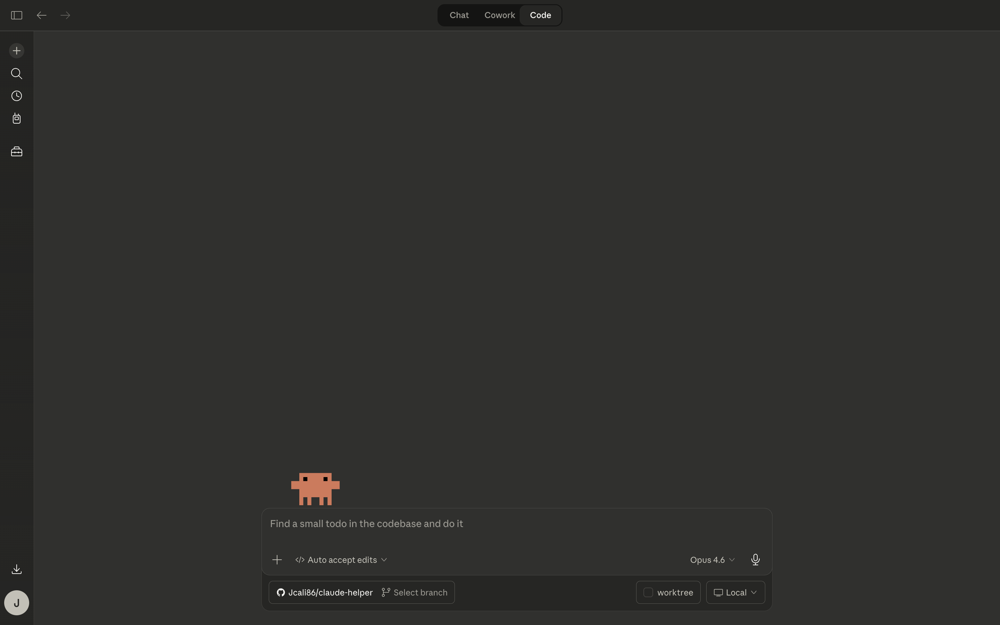
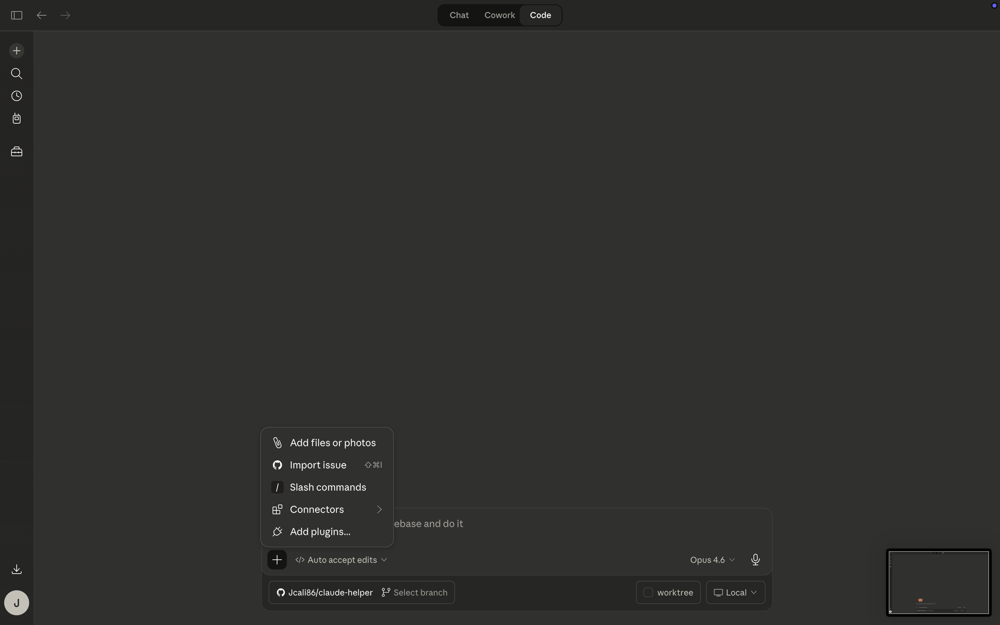

Screen 1
Claude Code before a project is selected
This is a helpful beginner screenshot because it shows the empty starting point clearly.
These are real screenshots from the Claude Mac app, not AI-generated mockups. This set shows what Code looks like before a project is selected, while the add menu is open, and once a repo is ready. Code is usually a later step, not the place most beginners need to start.
These screenshots are useful for explaining the beginner-important part of Claude Code: open the project first, then ask for help.

This is a helpful beginner screenshot because it shows the empty starting point clearly.

This is the menu people can open when they need to attach files or look at extra options.

This is the screenshot that best shows what “open the right folder first” actually looks like in practice.